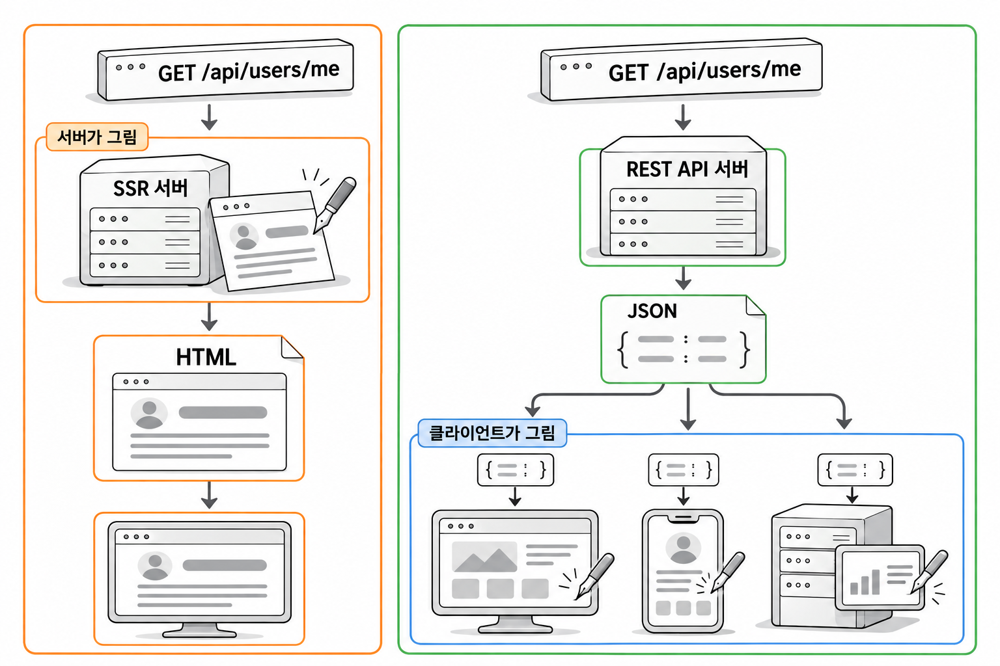
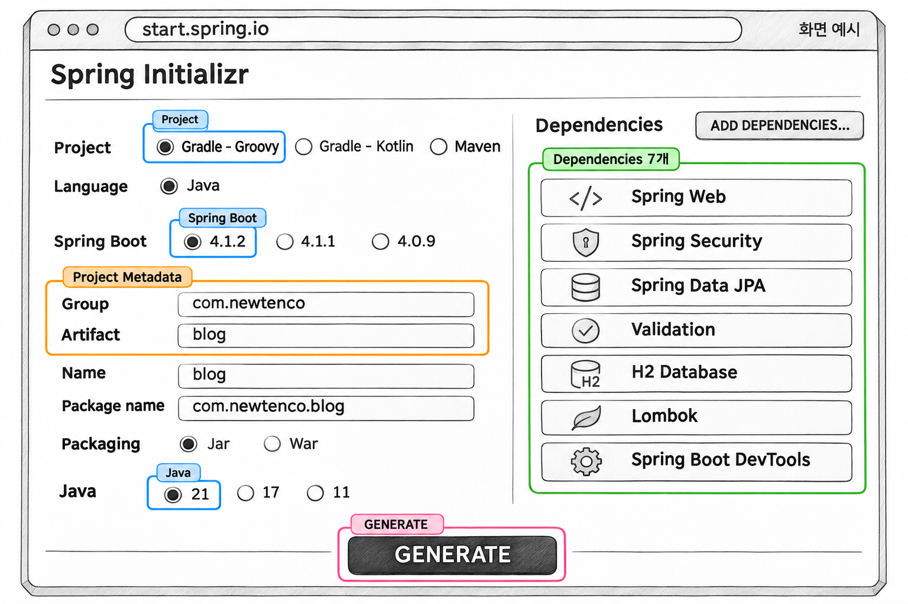
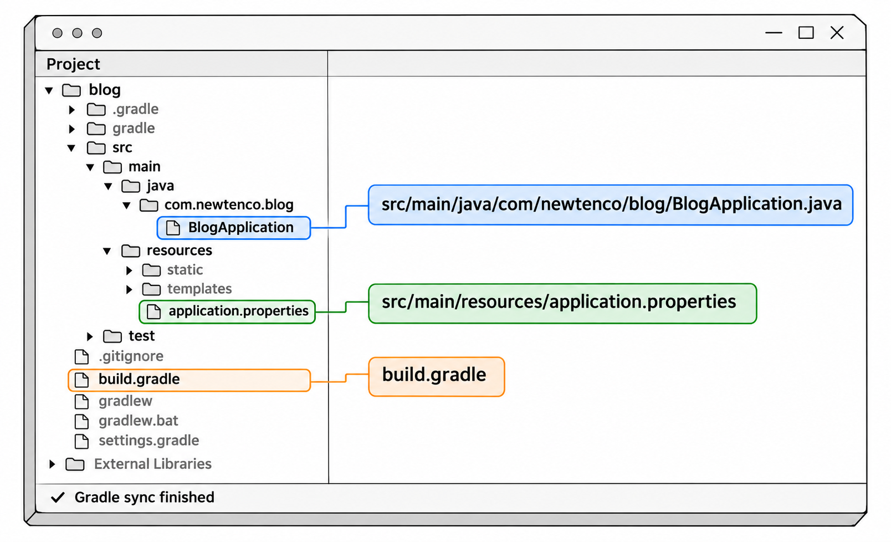
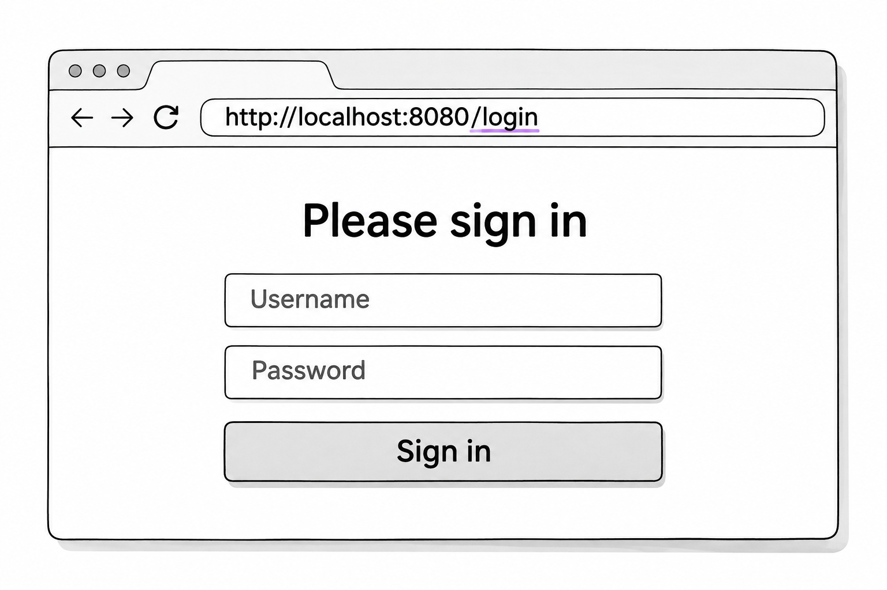
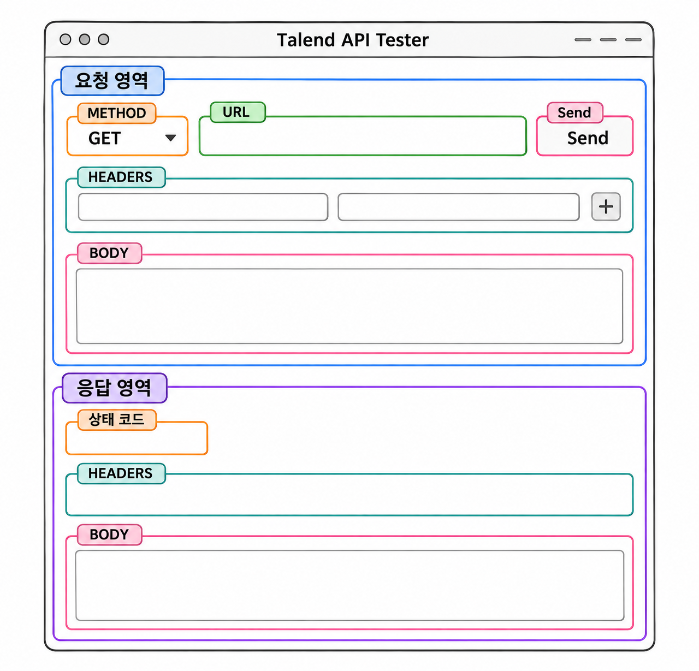
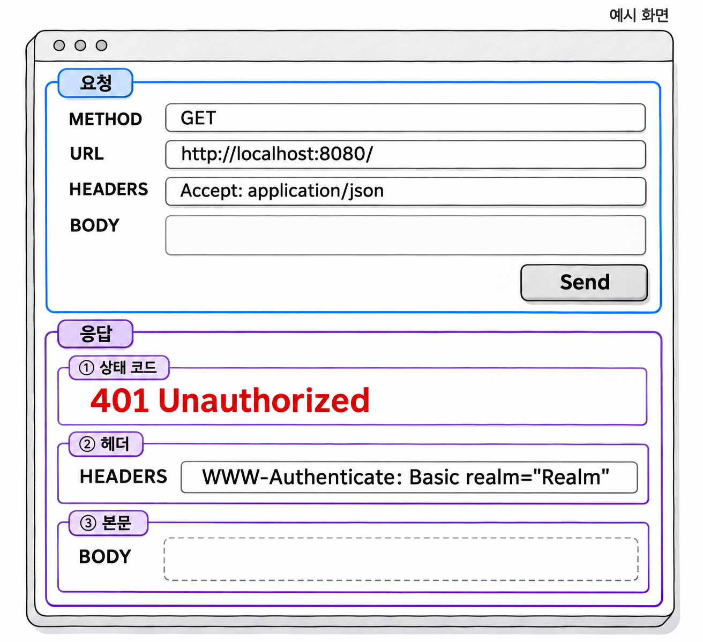

1장. REST API 프로젝트 준비
1. REST API와 SSR
1.1 REST API의 정의
REST(Representational State Transfer)는 로이 필딩(Roy Fielding)이 2000년 박사학위 논문에서 제시한 웹 아키텍처 원칙입니다. REST API는 이 원칙에 따라 서버와 클라이언트가 데이터를 주고받는 방식입니다. 다룰 대상은 주소(URI)로, 할 일은 HTTP 메서드로 나타냅니다. 결과는 JSON 같은 데이터로 돌려줍니다.
| 요소 | 표현 방법 | 예 |
|---|---|---|
| 자원 | URI | /api/users/me |
| 행위 | HTTP 메서드 | GET 조회 · POST 생성 · PUT 수정 · DELETE 삭제 |
| 응답 | JSON 데이터 | {"id":1,"username":"ssar"} |
이 책에서 만드는 서버는 화면을 만들지 않습니다. 회원가입, 로그인, 게시글 조회 같은 요청을 받아 JSON으로만 응답하는 REST API 서버를 만듭니다.
1.2 SSR 응답과 REST 응답 비교
지금까지 만든 SSR 프로젝트에서는 서버가 Mustache나 Thymeleaf로 HTML을 완성해 브라우저에 보냈습니다. 이 방식을 SSR(Server-Side Rendering, 서버 사이드 렌더링)이라고 합니다. REST API 서버는 데이터만 보내고, 화면은 그 데이터를 받은 클라이언트가 그립니다. 브라우저에서 JavaScript가 화면을 그리는 방식을 CSR(Client-Side Rendering, 클라이언트 사이드 렌더링)이라고 합니다.
| 구분 | SSR | REST API |
|---|---|---|
| 서버 응답 | HTML 문서 | JSON 데이터 |
| 화면을 그리는 곳 | 서버(Mustache, Thymeleaf) | 클라이언트(React, 모바일 앱) |
| 응답을 쓰는 클라이언트 | 주로 브라우저 | 브라우저, 모바일 앱, 다른 서버 |
같은 "내 정보 보기" 요청에 두 서버가 보내는 응답을 나란히 놓으면 차이가 분명히 보입니다. SSR 서버는 사람이 바로 볼 수 있는 HTML 문서를 보냅니다.
코드 조각
<html><body><h1>ssar 님의 정보</h1> ... </body></html>REST API 서버는 프로그램이 읽어서 쓸 데이터를 보냅니다.
코드 조각
{"status":200,"msg":"성공","body":{"id":1,"username":"ssar"}}
그림 1-1처럼 REST API 서버는 데이터만 보내므로 웹과 모바일 앱이 같은 API 하나를 함께 쓸 수 있습니다. 대신 서버가 화면을 만들지 않습니다. 그래서 로그인 화면과 세션에 기대던 SSR 방식의 로그인을 그대로 쓰기 어렵습니다. 3장부터 다루는 JWT와 스프링 시큐리티 설정이 이 문제를 해결합니다.
2. 프로젝트 생성
2.1 IntelliJ IDEA와 start.spring.io 설정
프로젝트는 start.spring.io(Spring Initializr)에서 만들어 내려받은 뒤 IntelliJ IDEA로 엽니다. IntelliJ IDEA 에디션과 상관없이 같은 방법으로 만들 수 있습니다. 브라우저에서 start.spring.io에 접속해 다음 값을 고릅니다.
| 항목 | 값 |
|---|---|
| Project | Gradle - Groovy |
| Language | Java |
| Spring Boot | 4.1.2 |
| Group | com.newtenco |
| Artifact | blog |
| Packaging | Jar |
| Java | 21 |
| Dependencies | Spring Web, Spring Security, Spring Data JPA, Validation, H2 Database, Lombok, Spring Boot DevTools |

생성형 예시 · 실제 실행 안 함
화면 아래 GENERATE 버튼을 누르면 blog.zip 파일을 내려받습니다. 압축을 풀고 IntelliJ IDEA에서 다음 순서로 엽니다.
- File → Open을 눌러 압축을 푼
blog폴더 안의build.gradle을 고릅니다. - 열기 방식을 묻는 창이 나오면 Open as Project를 고릅니다.
- 오른쪽 아래 진행 표시줄에서 Gradle 의존성 내려받기가 끝날 때까지 기다립니다.
- File → Project Structure → Project에서 SDK가 21인지 확인합니다.
- Lombok 어노테이션 처리를 켜라는 알림이 나오면 Enable을 누릅니다.

생성형 예시 · 실제 실행 안 함
2.2 java-jwt 의존성 추가
start.spring.io 목록에는 JWT 라이브러리가 없습니다. 그래서 build.gradle의 dependencies 맨 위에 auth0의 java-jwt 한 줄을 직접 추가합니다. 3장에서 이 라이브러리로 토큰을 만들고 검증합니다.
예제 1-1 — java-jwt를 추가한 build.gradle
파일명: build.gradle
plugins {
id 'java'
id 'org.springframework.boot' version '4.1.2'
id 'io.spring.dependency-management' version '1.1.7'
}
group = 'com.newtenco'
version = '0.0.1-SNAPSHOT'
description = 'Spring Boot 4 + Security + JWT REST API'
java {
toolchain {
languageVersion = JavaLanguageVersion.of(21)
}
}
repositories {
mavenCentral()
}
dependencies {
// JWT 라이브러리 (auth0)
implementation 'com.auth0:java-jwt:4.5.0'
implementation 'org.springframework.boot:spring-boot-h2console'
implementation 'org.springframework.boot:spring-boot-starter-data-jpa'
implementation 'org.springframework.boot:spring-boot-starter-security'
implementation 'org.springframework.boot:spring-boot-starter-validation'
implementation 'org.springframework.boot:spring-boot-starter-webmvc'
compileOnly 'org.projectlombok:lombok'
developmentOnly 'org.springframework.boot:spring-boot-devtools'
runtimeOnly 'com.h2database:h2'
annotationProcessor 'org.projectlombok:lombok'
testImplementation 'org.springframework.boot:spring-boot-starter-data-jpa-test'
testImplementation 'org.springframework.boot:spring-boot-starter-security-test'
testImplementation 'org.springframework.boot:spring-boot-starter-validation-test'
testImplementation 'org.springframework.boot:spring-boot-starter-webmvc-test'
testCompileOnly 'org.projectlombok:lombok'
testRuntimeOnly 'org.junit.platform:junit-platform-launcher'
testAnnotationProcessor 'org.projectlombok:lombok'
}
tasks.named('test') {
useJUnitPlatform()
}실행 결과
build.gradle을 고치면 편집기 오른쪽 위에 코끼리 모양의 Load Gradle Changes 버튼이 나타납니다. 버튼을 누르면 Gradle이 의존성을 다시 내려받고, Gradle 창의 Dependencies 목록에 다음 항목이 추가됩니다.
com.auth0:java-jwt:4.5.0plugins에 적은 스프링 부트 버전이 다른 스프링 의존성의 버전까지 정합니다. 그래서 스프링 의존성에는 버전을 적지 않습니다. java-jwt는 스프링이 관리하는 라이브러리가 아니므로 4.5.0처럼 버전을 직접 적어야 합니다.
2.3 스프링 부트 4에서 달라진 의존성
스프링 부트 4는 자동 설정을 기술별 모듈로 잘게 나누었습니다. 그래서 예제 1-1의 의존성 이름 가운데 몇 개는 스프링 부트 3 프로젝트와 다릅니다. start.spring.io에서 Spring Web을 골랐는데 spring-boot-starter-web이 아니라 spring-boot-starter-webmvc가 들어간 것도 이 때문입니다.
| 항목 | 스프링 부트 4 | 주의할 점 |
|---|---|---|
| 웹 스타터 | spring-boot-starter-webmvc | 예전 이름 spring-boot-starter-web은 사용 중단(deprecated) 대상입니다 |
| H2 콘솔 | spring-boot-h2console | 이 의존성이 없으면 /h2-console이 열리지 않습니다 |
| 테스트 스타터 | spring-boot-starter-webmvc-test 등 | 기술마다 테스트 스타터가 따로 있습니다 |
| 스프링 시큐리티 | 7.x | 스프링 부트 4.1.2에 포함된 버전을 씁니다 |
| JSON | Jackson 3 | 패키지 이름이 com.fasterxml.jackson에서 tools.jackson으로 바뀌었습니다 |
인터넷에서 찾은 예전 예제를 따라 spring-boot-starter-web만 적거나 H2 콘솔 모듈을 빼면, 서버는 실행되어도 H2 콘솔이 열리지 않을 수 있습니다. Jackson 3의 바뀐 패키지 이름은 6장에서 필터 단계의 응답을 직접 JSON으로 만들 때 다시 만납니다.
3. 시큐리티 기본 동작 확인
3.1 모든 요청이 로그인 화면으로 가는 이유
설정 파일을 고치기 전에 예제 1-1 상태 그대로 서버를 실행해 봅니다. BlogApplication.java를 열고 main() 메서드 왼쪽의 실행 버튼을 누릅니다. 설정을 하나도 적지 않았지만 스프링 부트가 H2 메모리 DB를 자동으로 연결하므로 서버는 정상 실행됩니다.
실행 결과
콘솔 마지막 부분에 다음과 비슷한 줄이 출력되면 서버가 8080 포트에서 실행 중입니다.
Tomcat started on port 8080 (http) with context path '/'
Started BlogApplication in 3.512 seconds브라우저에서 http://localhost:8080에 접속하면 만든 적 없는 Please sign in 화면이 나옵니다. 주소창의 주소도 http://localhost:8080/login으로 바뀌어 있습니다.

생성형 예시 · 실제 실행 안 함
스프링 부트는 의존성에 스프링 시큐리티가 있으면 애플리케이션 전체를 보호하는 기본 보안 설정을 자동으로 적용합니다. 이 기본 설정은 오류 페이지 주소 /error까지 포함해 모든 주소에 인증을 요구합니다. 인증이란 요청한 사람이 누구인지 확인하는 일이며, 5장에서 자세히 다룹니다. 인증되지 않은 요청이 들어오면 시큐리티는 요청한 쪽에 따라 두 방식 가운데 하나로 응답합니다.
| 요청한 쪽 | 시큐리티의 응답 |
|---|---|
| HTML을 원하는 브라우저 | 기본 로그인 화면(/login)으로 이동시킵니다(폼 로그인) |
| 데이터를 원하는 프로그램 | 화면 없이 401 Unauthorized로 응답합니다(HTTP Basic) |
그림 1-2처럼 요청이 컨트롤러에 닿기 전에 시큐리티가 먼저 거릅니다. 컨트롤러를 하나도 만들지 않았는데 로그인 화면이 나온 것은 이 때문입니다. 이 책에서는 화면이 없는 REST API 서버를 만들므로, 6장에서 이 기본 설정을 직접 만든 SecurityConfig로 바꿉니다.
3.2 임시 사용자와 비밀번호
로그인 화면이 있으면 로그인할 계정도 있어야 합니다. 서버를 실행한 콘솔을 위로 올려 보면 다음 줄이 있습니다.
실행 결과
Using generated security password: 59a952e5-6b68-4c1b-99a1-eeb4c34d4900등록한 사용자가 없으므로 스프링 부트가 아이디가 user인 임시 사용자를 메모리에 하나 만든 것입니다. 비밀번호는 서버를 실행할 때마다 무작위로 새로 만들어지며, 개발할 때 확인용으로만 씁니다. 로그인 화면에 Username user와 콘솔의 비밀번호를 넣고 Sign in을 누릅니다.
실행 결과
로그인에 성공하면 처음 요청한 http://localhost:8080/으로 돌아갑니다. 스프링 시큐리티 버전에 따라 주소창에는 http://localhost:8080/?continue처럼 ?continue가 붙어 보일 수 있습니다[확인 필요]. 인증은 통과했지만 / 주소를 처리할 컨트롤러가 없으므로 오류 화면이 나옵니다.
Whitelabel Error Page
This application has no explicit mapping for /error, so you are seeing this as a fallback.
There was an unexpected error (type=Not Found, status=404).로그인 화면 대신 404 화면이 나왔다는 것은 요청이 시큐리티를 지나 컨트롤러를 찾는 단계까지 갔다는 뜻입니다. 로그인 상태는 SSR에서처럼 서버 세션에 저장됩니다. 그래서 브라우저를 닫거나 http://localhost:8080/logout에서 로그아웃하기 전까지 유지됩니다.
이 임시 사용자 로그는 6장에서 SecurityConfig를 작성한 뒤에도 계속 출력됩니다. 이 프로젝트는 시큐리티의 로그인 기능 대신 JWT 필터로 직접 인증하므로 이 비밀번호를 쓸 일이 없습니다. 그대로 두고 무시해도 됩니다.
4. 프로파일 설정
4.1 공통 설정과 dev 설정 나누기
프로파일(profile)은 실행 환경에 따라 다른 설정 파일을 고르는 기능입니다. 모든 환경에서 같은 설정은 application.properties에 두고, 개발 환경에서만 쓸 설정은 application-dev.properties에 따로 둡니다. 파일 이름의 - 뒤에 붙은 dev가 프로파일 이름입니다.
기본 문법
spring.profiles.active=프로파일이름spring.profiles.active=dev라고 적으면 스프링 부트는 application.properties를 읽은 뒤 application-dev.properties를 함께 읽습니다. 두 파일에 같은 키가 있으면 프로파일 파일의 값이 적용됩니다. 나중에 운영 환경을 만들 때는 application-prod.properties를 추가하고 이 한 줄만 prod로 바꾸면 됩니다.
4.2 H2·JPA·data.sql 설정
공통 설정 파일과 dev 설정 파일을 작성합니다. 2장에서 더미 데이터를 넣을 data.sql 파일도 지금 미리 만들어 둡니다. 설정에 적은 위치에 파일이 없으면 서버가 시작하다가 오류로 멈추기 때문입니다.
예제 1-2 — 공통 설정과 dev 설정 파일 만들기
이어서: 예제 1-1
파일명: src/main/resources/application.properties
spring.application.name=blog
# 프로필 설정: application-dev.properties 를 함께 읽는다
spring.profiles.active=dev파일명: src/main/resources/application-dev.properties
# ===== Server =====
server.port=8080
server.servlet.encoding.charset=UTF-8
server.servlet.encoding.force=true
# ===== H2 Datasource (메모리 모드: 서버를 끄면 데이터가 사라짐) =====
spring.datasource.driver-class-name=org.h2.Driver
spring.datasource.url=jdbc:h2:mem:test
spring.datasource.username=sa
spring.datasource.password=
spring.h2.console.enabled=true
# ===== JPA / Hibernate =====
# create: 실행할 때마다 테이블을 새로 만든다 (개발 단계 전용, 운영에서 사용 금지)
spring.jpa.hibernate.ddl-auto=create
spring.jpa.show-sql=true
spring.jpa.properties.hibernate.format_sql=true
spring.jpa.open-in-view=false
# ===== SQL Init (data.sql) =====
spring.sql.init.data-locations=classpath:db/data.sql
# 테이블 생성(JPA) 이후에 data.sql 을 실행한다
spring.jpa.defer-datasource-initialization=true
# ===== Logging Level =====
logging.level.com.newtenco.blog=DEBUG
# ===== CORS Allow (콤마로 여러 개 지정 가능) =====
# chrome-extension://* 는 Talend API Tester 같은 크롬 확장 프로그램의 요청을 허용한다
app.cors.allowed-origins=http://localhost:3000,http://localhost:5173,chrome-extension://*파일명: src/main/resources/db/data.sql
-- 2장에서 더미 데이터를 채운다실행 결과
서버를 다시 실행하면 콘솔 앞부분에 dev 프로파일이 적용되었다는 줄이 나옵니다.
The following 1 profile is active: "dev"JPA·H2 설정은 SSR 프로젝트에서 써 본 것과 거의 같습니다. 이 책에서 눈여겨볼 설정만 표로 정리합니다.
| 설정 | 의미 |
|---|---|
spring.datasource.url=jdbc:h2:mem:test | 메모리 DB를 씁니다. 서버를 끄면 데이터가 사라집니다 |
spring.jpa.hibernate.ddl-auto=create | 실행할 때마다 테이블을 새로 만듭니다. 개발 단계 전용입니다 |
spring.sql.init.data-locations | 서버가 시작할 때 실행할 SQL 파일의 위치입니다 |
spring.jpa.defer-datasource-initialization=true | JPA가 테이블을 만든 다음에 data.sql을 실행합니다 |
spring.jpa.open-in-view=false | 응답을 만들기 전에 DB 연결을 반납합니다 |
spring.h2.console.enabled=true | H2 콘솔을 켭니다 |
app.cors.allowed-origins | 직접 정한 설정 값입니다. 6장 CORS 설정에서 읽어 씁니다 |
defer-datasource-initialization을 빼면 data.sql이 테이블보다 먼저 실행되어 "테이블이 없다"는 오류가 납니다. 서버를 띄울 때마다 테이블을 새로 만들고 더미 데이터를 다시 넣습니다. 그래서 실습하다 데이터가 꼬여도 서버를 재시작하면 처음 상태로 돌아갑니다.
open-in-view=false로 두면 서비스 계층을 벗어난 뒤에는 지연 로딩(LAZY)을 할 수 없습니다. 그래서 응답에 필요한 데이터는 서비스 안에서 모두 꺼내 DTO에 담아야 합니다. 10장에서 fetch join으로 조회 쿼리를 만드는 이유가 여기에 있습니다.
H2 콘솔은 켜 두었지만 지금 http://localhost:8080/h2-console에 접속하면 시큐리티가 막아 로그인 화면이 나옵니다. 콘솔 접근은 6장에서 허용합니다.
5. Talend API Tester 준비
5.1 설치와 화면 구성
REST API 서버에는 HTML 화면이 없습니다. 브라우저 주소창만으로는 POST 요청을 보내거나 헤더를 넣을 수도 없습니다. 그래서 요청을 직접 만들어 보내고 응답을 보여 주는 도구를 씁니다. 이 책에서는 크롬 확장 프로그램인 Talend API Tester를 씁니다.
- 크롬 웹 스토어에서 "Talend API Tester - Free Edition"을 검색합니다.
- Chrome에 추가를 누릅니다.
- 크롬 툴바의 확장 프로그램 아이콘에서 Talend API Tester를 눌러 실행합니다.
Talend API Tester 화면은 위쪽 요청 영역과 아래쪽 응답 영역으로 나뉩니다. 요청 영역에서 보낼 내용을 채우고, 응답 영역에서 서버가 돌려준 결과를 읽습니다.
| 영역 | 칸 | 하는 일 |
|---|---|---|
| 요청 | METHOD | GET · POST · PUT · DELETE 가운데 하나를 고릅니다 |
| 요청 | URL | 요청을 보낼 주소를 적습니다 |
| 요청 | HEADERS | Content-Type, Authorization 같은 요청 헤더를 추가합니다 |
| 요청 | BODY | POST · PUT 요청에 담을 JSON을 적습니다 |
| 요청 | Send | 요청을 보냅니다 |
| 응답 | 상태 코드 | 200, 401 같은 HTTP 상태 코드가 색으로 표시됩니다 |
| 응답 | HEADERS | 서버가 보낸 응답 헤더입니다 |
| 응답 | BODY | 서버가 보낸 응답 본문입니다. JSON이면 보기 좋게 정렬해 줍니다 |

생성형 예시 · 실제 실행 안 함
7장부터 회원가입, 로그인, 토큰을 넣은 요청을 모두 이 화면에서 보냅니다. 요청 헤더에 토큰을 넣는 방법은 8장에서 다룹니다.
5.2 요청 보내고 응답 읽기
서버를 실행한 상태에서, 3.1절에서 브라우저로 보낸 요청을 Talend API Tester로 다시 보냅니다. 이번에는 Accept 헤더에 application/json을 넣어 HTML이 아니라 데이터를 원하는 클라이언트라고 알립니다.
| 입력 칸 | 값 |
|---|---|
| METHOD | GET |
| URL | http://localhost:8080/ |
| HEADERS | Accept: application/json |
실행 결과
응답 영역에 다음 내용이 표시됩니다. BODY는 비어 있습니다.
401 Unauthorized
WWW-Authenticate: Basic realm="Realm"
생성형 예시 · 실제 실행 안 함
같은 주소에 요청했는데 브라우저는 로그인 화면으로 이동했고, Talend API Tester는 401 상태 코드만 받았습니다. 3.1절의 표처럼 시큐리티가 요청 헤더를 보고 클라이언트가 HTML을 원하지 않는다고 판단해 HTTP Basic 방식으로 응답한 것입니다. WWW-Authenticate 헤더는 "아이디와 비밀번호를 Basic 방식으로 보내라"는 뜻입니다.
응답은 상태 코드, 헤더, 본문 순서로 읽습니다. 상태 코드로 성공과 실패를 먼저 판단하고, 실패면 헤더와 본문에서 이유를 찾습니다. 지금 응답은 본문이 비어 있어서 클라이언트가 실패한 이유를 알기 어렵습니다. 4장에서 모든 응답을 {"status":..., "msg":..., "body":...} 모양으로 통일하고, 6장에서 시큐리티가 막은 요청도 같은 JSON 모양으로 응답하게 바꿉니다.